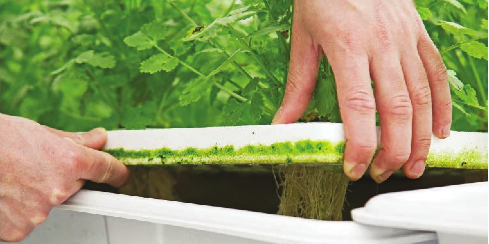
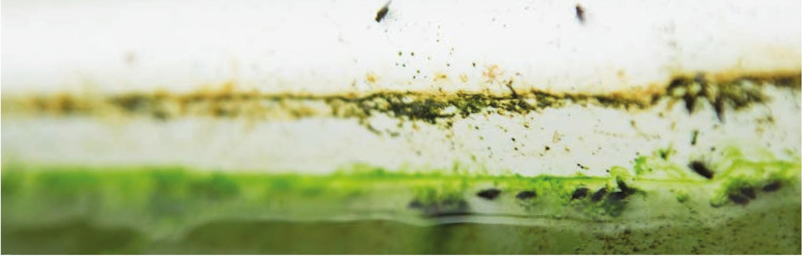

Algae on the edge of a floating raft INFESTATIONS ALGAE Algae growth is usually not an issue, but it can lead to other problems. Algae will steal some nutrients from the nutrient solution, but this is usually not a significant issue. The major concern is algae can act as a food source for fungus gnats and shore flies. To control algae growth, minimize the exposure of sunlight to the nutrient solution. Algae growing on the surface of seedlings is often a sign of overwatering, but it usually is not an issue that will significantly affect plant growth. FUNGUS GNATS AND SHORE FLIES Fungus gnats feed on fungi, algae, and plant tissue. The adult fungus gnats generally do not pose a threat, but the larvae can damage crops. The larvae feed on plant roots, creating wounds that make the plant susceptible to pathogens like Pythium and Fusarium. Shore flies are very similar to fungus gnats in looks but their larvae do not feed on plant roots. Shore flies do not damage crops, but they can definitely be annoying. Fungus gnats have a mosquito-like body shape with long legs. Shore flies look more like a fruit fly than a mosquito. There are many ways to control fungus gnats and shore flies; the following are just a few strategies: Shore flies lay eggs in algal scum. The shore fly larvae feed on algae. 166 DIY HYDROPONIC GARDENS

